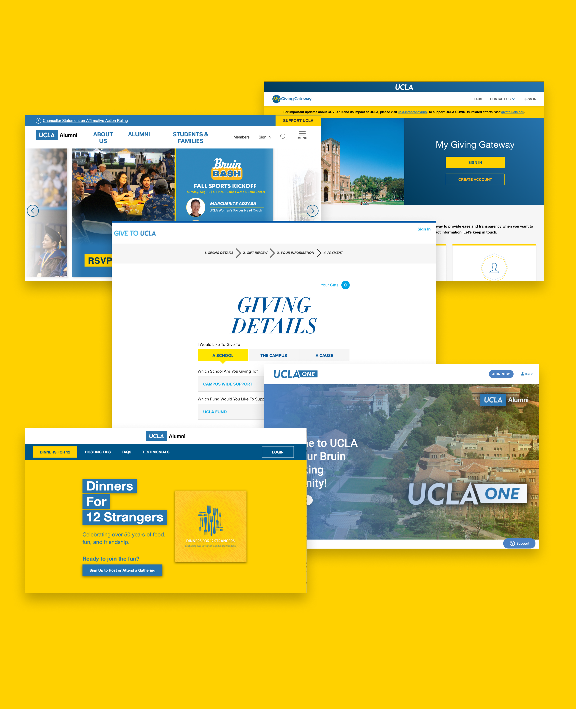

UX / Product Designer
Eric Rodriguez
Bridging research, design, and development to create digital experiences people actually love.
View My Work
Background
Download Resume
About Me
Skills & Tools
Design
- UX Research
- Product Design
- UI Design
- Wireframing
- Prototyping
- User Testing
Tools
- Figma
- WordPress
- HTML / CSS
- Jira
- Adobe Illustrator
- Google Analytics
Methods
- Focus Groups
- Journey Mapping
- Competitive Analysis
- Agile / Scrum
- Brand Management
Languages
- English (Native)
- Spanish (Fluent)
Experience
-
Aug 2023 – Present
E-Commerce Product Designer
UCLA Advancement Technology Solutions
Design and develop virtual e-commerce products, manage cross-functional projects, and lead UX research initiatives across the UCLA External Affairs division. Collaborate with developers, stakeholders, and researchers to deliver user-centered solutions.
-
May 2018 – Aug 2023
Business Analyst
UCLA Advancement Technology Solutions
Analyzed business processes and stakeholder needs to inform technology decisions across the Advancement division. Supported data-driven product roadmapping and cross-team coordination.
-
Jul 2017 – May 2018
Development Assistant
UCLA External Affairs
Supported the External Affairs team with donor relations, communications, and event coordination. Built foundational knowledge of the UCLA Advancement ecosystem.
-
2017
Bachelor of Arts, English & Political Science
University of California, Los Angeles (UCLA)